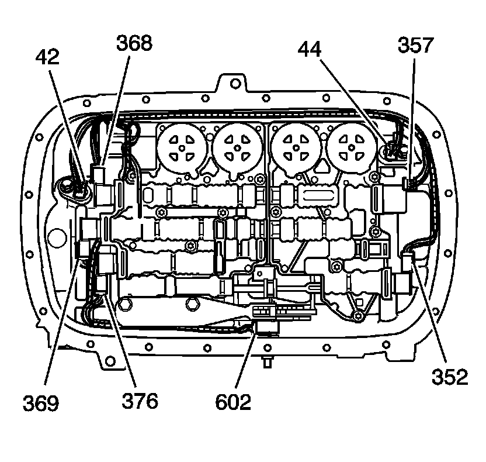

Wiring Harness Installation
Wiring Harness Installation

1. Install the wiring harness connector (55) through the case. Hold the connector and install the wiring harness connector retainer (54).

2. Route the harness to the valve body and connect the following components:
* Pressure Control Solenoid (357)
* TCC PWM Solenoid (352)
* 1-2 Shift Solenoid (368)
* 2-3 Shift Solenoid (369)
* 4-5 Shift Solenoid (376)
* Internal Mode Switch - IMS (602)
* Input Speed Sensor (44)
* Output Speed Sensor (42)